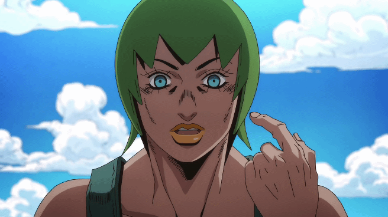
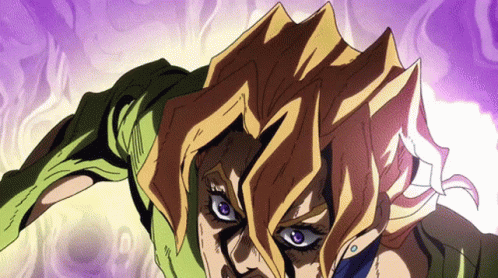
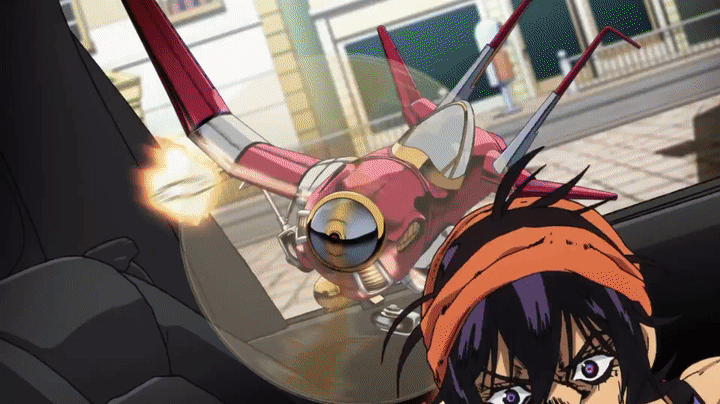
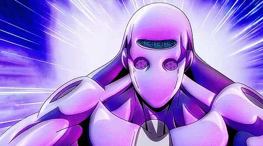

Stone Ocean
En esta tabla se muestran los protagonistas y stands de la parte.
Jolyne Kujo y Stone Free
Ermes Costello y Kiss

Foo Fighters (Él es un stand que controla un cuerpo)

Panacotta Fugo y Purple Haze

Narancia Ghriga y Aerosmith

Leone Abbachio y Moody Blues